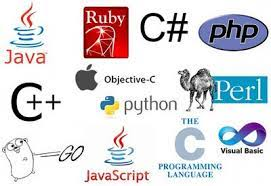

Programming language A programming language is a system of notation for writing computer programs. Most programming languages are text-based formal languages, but they may also be graphical. They are a kind of computer language. The description of a programming language is usually split into the two components of syntax (form) and semantics (meaning), which are usually defined by a formal language. Some languages are defined by a specification document (for example, the C programming language is specified by an ISO Standard) while other languages (such as Perl) have a dominant implementation that is treated as a reference. Some languages have both, with the basic language defined by a standard and extensions taken from the dominant implementation being common.
